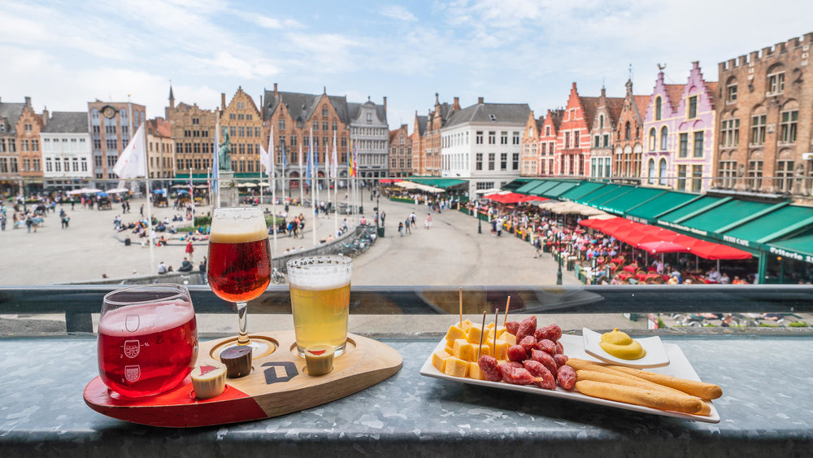
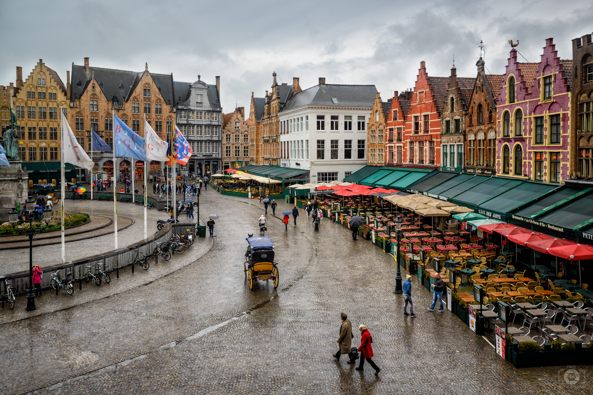
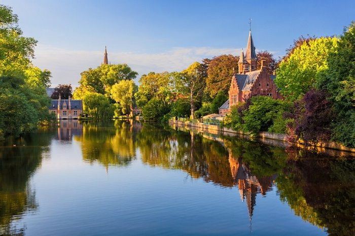
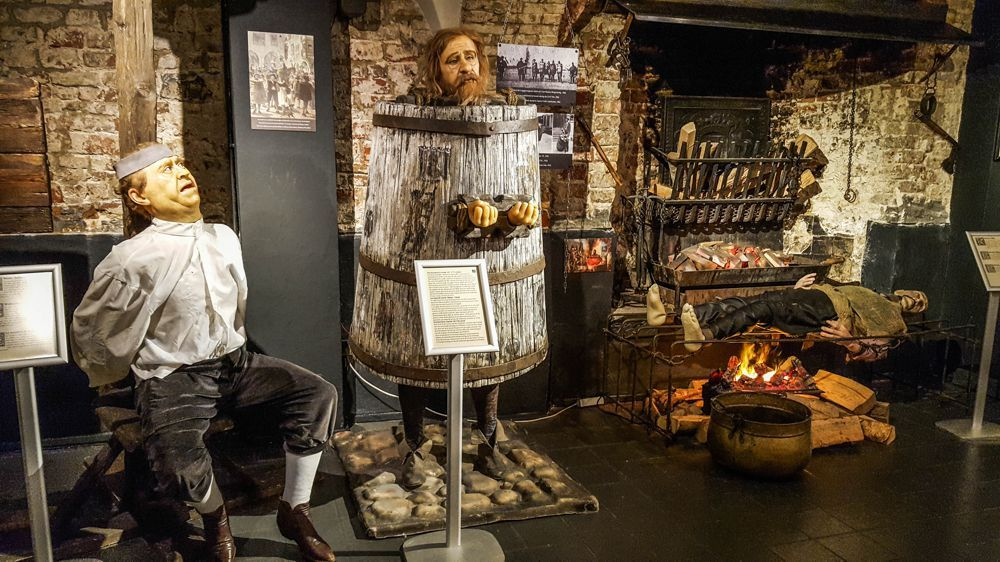
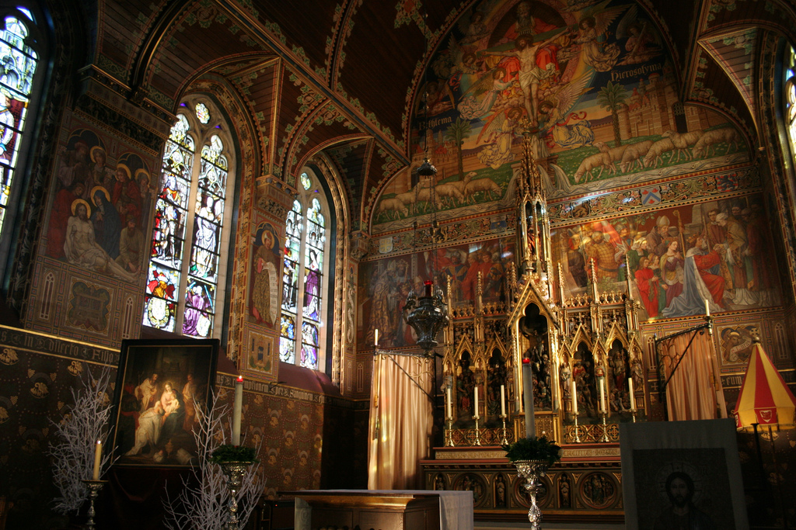
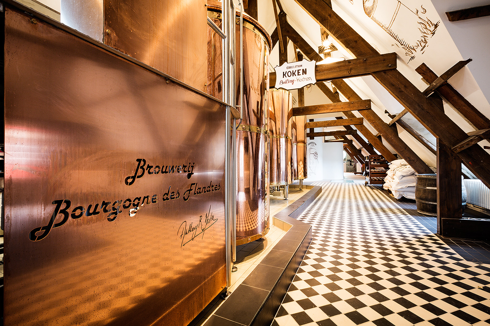

- Home
- -
- Places
- -
- Transport
- -
- Travel Tips

Main page image © Jose Ricardo 2019
Places of Interest
Bruges has so much to offer for tourists and locals alike.
Whether you're looking for a short city break or a longer family holiday,
Bruges is sure to cater to your needs.
From its large array of bars, cafés and restuarants, to its selection of churches
and beautiful rivers, you are never short of things to do and places to see.
Below I have listed a small selection of must see places to visit during your stay
that you are sure to love.
So relax and soak in the wonderful sights of this world heritage city.
Brugge Markt

Brugge Markt or Market Square as it is better known is the bustling heart of Bruges. Once the site of medieval
fairs and festivals, it is now a meeting place for locals and tourists alike. Dating back to 985, the Market Square
covers an area of 1 hectare and sits in the shadow of the spectacular 12th century Belfry Tower. Although it is called a square
it is actually a giant circle and a quick view around will reveal an array of colourful buildings and stunning architecture,
including the West Flanders Provincial Court. Originally built in the 12th century, it was demolished and rebuilt in 1787 before
a fire destroyed it in 1878 where it was rebuilt in its now neo-gothic style in 1887. In the centre of the square stand the statues of
Jan Breydel and Pieter de Coninck.
The square was made car free in 1995 making it a perfect place to gather in one of the many bars, restaurants and cafés situated
around the outer edges or alternatively you can tour the square and surrounding areas aboard one of the horse drawn carriages.
Wednesdays in the square become market day. Open from 8am until 1pm, dozens of stalls set out selling an array of meats, cheeses, fruits, veg,
flowers and a selection of local produce and trinkets.
With no entry fees and open 24 hours a day, all year round, it is a must see place for anyone visiting.
Minnewater Lake

Minnewater Lake, also know as the 'Lake of Love', is an enlongated lake towards the southern side of the city.
Surrounded by Minnewater Park, it is one of the best looking parts of the city boasting stunning views and scenery making it a great escape
from the hustle and bustle for both couples and families. With it standing between the train and coach stations and the city, its virtually
impossible to miss the park on the way through.
The park is named after a young woman called Minna whose legend tells of her forbidden love to a warrior. She ran away to the forest to escape
her fathers arranged partner where she died of exhaustion in her lovers arms. Standing as the centre piece to the lake is 'Lovers Bridge' which
is named in Minna's honour. It is said that if you walk over the bridge and kiss your loved one, then the love will become eternal. The bridge
is also a great place to take pictures.
The park also contains lots of diverse wildlife including swans, which are the cities emblem. Offering stunning views all year round, espcially
in Autumn when the leaves change colour, Minnewater Park and lake are sure to please the senses.
Just like the Market Square, Minnewater park is open 24 hours a day, 365 days a year, offering another wonderful part of the city for free.
Image © Marco Saracco/Flikr
Torture Museum

Not for the faint of heart, The Torture Museum is one of the more unique and intriguing parts of Bruges. Situated
in the heart of the city, the museum is located in the cellar of one of the oldest medieval buidings in Europe and has been preserved perfectly over the
years. The cellar is constructed out of the original stones dating back to the 11th and 12th centuries.
Fantastically designed using real and model props from the times and using realistic wax models, the Torture Museum gives visitors a real insight into
the methods of punishment used and the damage they would have caused.
Although the museum is only small, the exhibit boasts over 100 devices used in excecution and torture displayed in glass cases or intricate displays
and each one is accompanied by a plaque of inforative text. The museum is one of my favourite hidden gems in Bruges and is definitely worth the visit if
you can stomach it!
The museum is open Monday to Sunday from 10:30am to 18:30pm and prices are reasonable. Children under 10 go in free, adults are €9.00, seniors are €7.00
and students are €6.00. You can also get a family ticket for €25.00 but this is based on 2 adults and 3 children so may not be suitable for many.
For more information, visit: https://torturemuseum.be/
Image © Carlos Andre Marinho
Basilica Of The Holy Blood

Also located in the center of Bruges in a corner of the Burg Square is one of the most significant churches in the world,
The Basilica of the Holy Blood. The church is actually a double church with a lower Romanseque level and an upper neo-Gothic level and it is the upper level that contains the venerated
relic of the Holy Blood, a vial containing a piece of cloth with the blood of Jesus Christ on it. The church also features a museum outside containing more antiquities. Tourists and religious pilgrims flock to the church in
droves all year round worship at the church and see the Holy Blood in person. The relic is displayed to the public every Friday and on every day between the
3rd and 17th May so would be the best time to go but would also be the busiest. Just after this on the fortieth day of easter (known as Ascention Day) is
procession of the Holy Blood in which the bishop carries the relic through the decorated streets and residents act out biblical scenes before a holy service.
The procession is famous around the world attracting high ranking politcal guests as well as numerous holy figures.
The church itself is open from 9.30am to 12.30pm and 14.00pm to 17.30pm 7 days a week and is free to enter, however the museum does charge €2.50 for entry and both
the church and museum are closed on the 1st of January and between the 13th and 18th January.
For more information, visit: https://www.holyblood.com
Image © Chris Brown / Flickr
Bourgogne des Flandres Brewery

You can't visit Belgium without sampling its world famous beer and what better way to do it than paying a visit to where its made
at the Bourgognes des Flandres Brewery.
There are currently three breweries operating in Bruges today but none are as famous or arguably as important as the Bourgogne des Flandres. Originally
produced by the Van Houtryve family in 1911 at their Den Os brewery, the beer became hugely popular as it used old and new beer in a traditional Flemish
brewing way to create a unique taste. Eventually being shut down in 1957, the production of Bourgogne was moved to the Verhaeghe Brewery outside the city where it continued
until 1985 when it was acquired by Timmermans Lambic Brewery where it was finally moved back into Bruge in this stunning, state of the art brewery you can
see today.
Tours take around 45 minutes and will take you all through the brewing process and includes a video of the beers history. You will then see the ingredients and
discover how the beer is brewed as well as being able to tap your own beer in the interactive areas.
In the loft, you will see the actual brewers in action who are always glad to have a chat with the guests and it all adds up to creating a great experience
for the visitors.
The brewery is open Tuesdays to Sundays between the hours of 10:30am and 18:00pm and tickets are €11.00 for adults although the early timeslot at 10:30am is €9.00 and for 10-15 year olds its €5.50.
For more information, visit: https://www.bourgognedesflandres.be/en